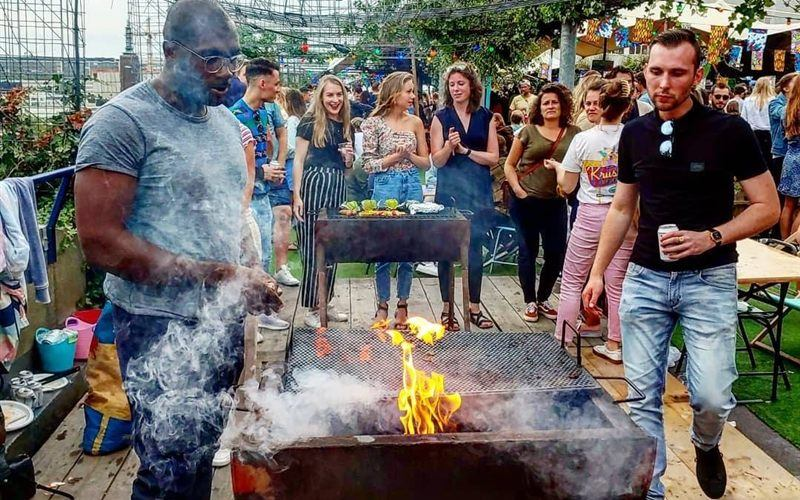
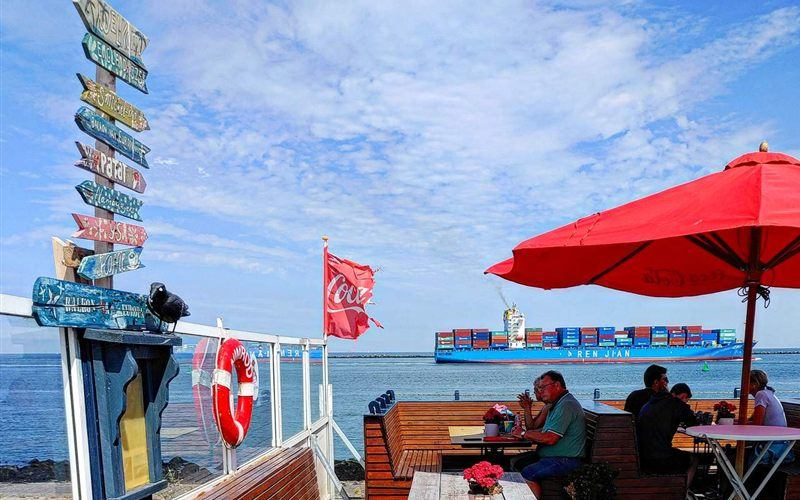
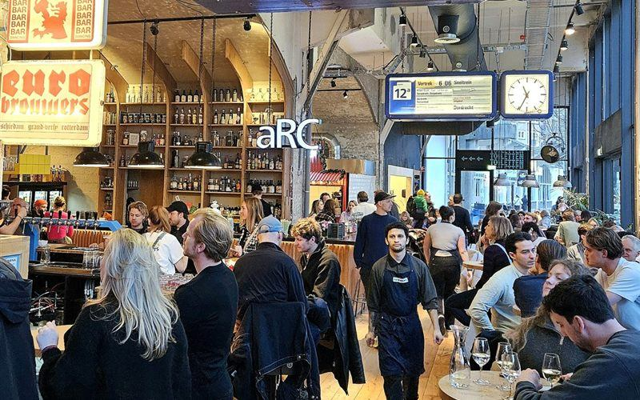

Borrelplek
Centrum
Het populaire pop-up dakpark met eigen bbq's en skylineuitzicht slaat voor het tweede jaar op rij een zomer over. Archieffoto's van tien jaar DÂK, met de belofte: tot 2027.
Lees het verhaal →

Dagje uit
Maasvlakte
Helemaal achteraan op de Maasvlakte staat een oude snackbar waar de grootste zeeschepen vlak langs het terras de haven uit varen. Geen toeristenval, gewoon rauw Rotterdam.
Lees het verhaal →

Foodhal
Borrelplek
Noord
Het oude stationsgebouw op de Hofbogen is nu een foodhal met negen keukens, drie bars en een apart restaurant. En bijna niemand kent het terras erboven, precies waar vroeger de trein stopte.
Lees het verhaal →

Lunchplek
Delicatessen
Centrum
Van buiten loop je er zo voorbij. Van binnen: verse broodjes, plaatpizza en het ultieme vakantiegevoel. Rotterdammers weten het al lang — de rij begint om 11.45 uur.
Lees het verhaal →

Kidsproof
Centrum
De eerste surfpool ter wereld midden in een stad. En de beste plek om ’m te bekijken, met een bubble tea uit de Markthal erbij.
Lees het verhaal →

Restaurant
Centrum
Al ruim dertig jaar een échte Italiaan aan de Goudsesingel, met een gastheer die vroeger bij het Scapino Ballet danste. Van zwarte risotto tot ossobuco — nog nooit teleurgesteld.
Lees het verhaal →
Nog geen verhalen in deze combinatie — die komen eraan. Volg @rotterdambyferry voor het laatste nieuws.